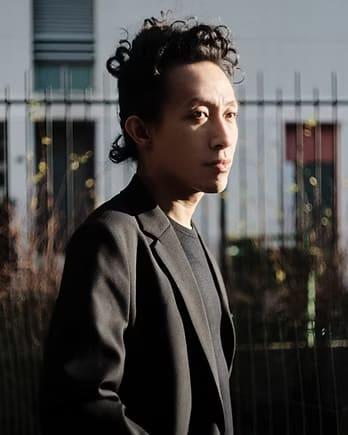
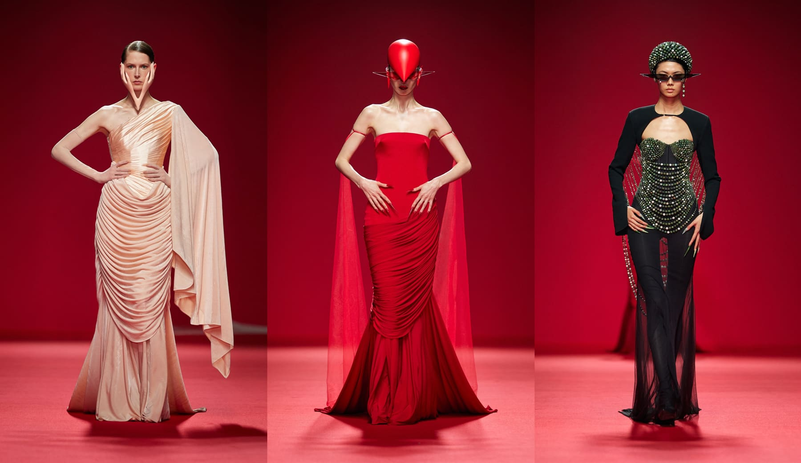

THE HOUSE OF ROBERT WUN
ROBERT
ROBERT
WUN

Born in Hong Kong, Robert Wun moved to London to study at the London College of Fashion. He founded his house in 2014 with a single conviction: that a garment is not decoration but event — an encounter between material intelligence and the living body. His education gave him fluency in construction. His heritage gave him an eye for ceremony.

The house operates outside the logic of trends. It is built on the belief that a garment is an event — that to wear Robert Wun is to inhabit a position, a posture, a presence. Each collection is a singular investigation into form, material, and meaning.
LONDON, 2014
HAUTE COUTURE
PARIS — LONDON